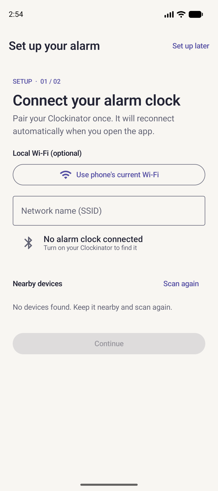
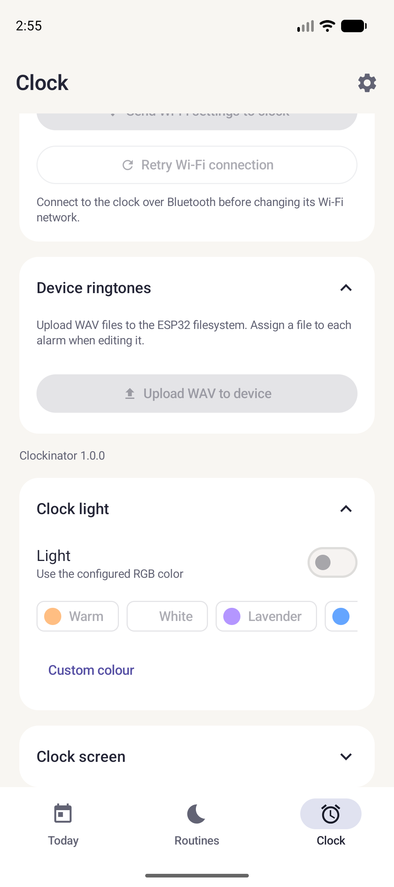
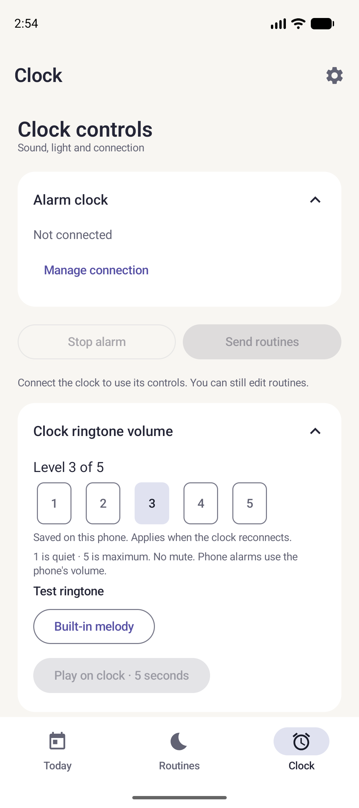
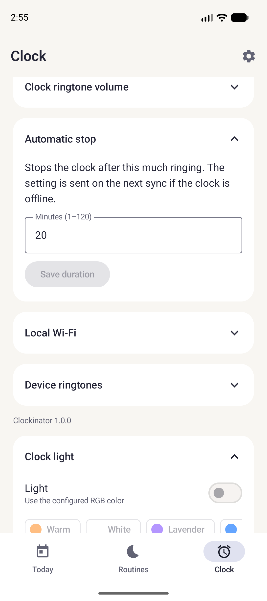
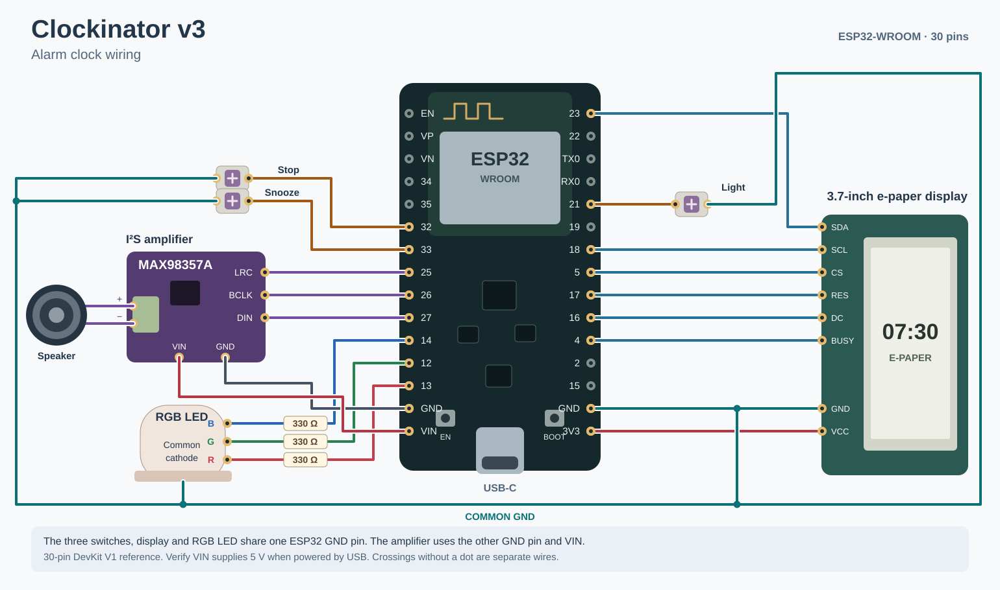

Démarrer sur l’établi
Installez le firmware, branchez l’écran et confirmez la synchronisation avant de monter les autres composants dans le boîtier.
Installer le firmware
- Utilisez un ESP32-WROOM classique à 30 broches avec 4 Mo de flash et un câble USB de données. Repérez les noms sérigraphiés sur votre carte. Voir le brochage illustré.
- Dans les releases GitHub, téléchargez l’archive ESP32 et extrayez-la. Sous Windows, installez Python et
python -m pip install esptool==5.1.0. Fermez le moniteur série avant de flasher. - Depuis le dossier extrait, lancez la commande ci-dessous avec le port COM réel. Pour une mise à jour avec le même partitionnement, omettez
-InitialInstall.

./flash-clock.ps1 -Port COM5 -InitialInstallSi aucune release n’est disponible, ouvrez esp32/clockinator/clockinator.ino dans Arduino IDE. Installez le support ESP32 et les bibliothèques ArduinoJson 7, GxEPD2 et Adafruit GFX. Sélectionnez la carte et son port série, choisissez No OTA (2MB APP/2MB SPIFFS), puis téléversez. Guide firmware.
Installer l’app Android
Téléchargez l’APK dans les releases, ouvrez-le sur Android et autorisez l’installation depuis cette source si Android le demande. Au premier lancement, autorisez l’accès Bluetooth. Compiler et installer l’app avec Android Studio si aucun APK n’est publié.
Brancher l’écran e-paper SPI
Débranchez l’USB pendant le câblage. Ce tableau correspond à un module GDEY037T03 sur carte adaptatrice SPI compatible 3,3 V.
| Composant | ESP32 |
|---|---|
| SCL / SCK | GPIO18 |
| SDA / DIN | GPIO23 |
| CS | GPIO5 |
| DC | GPIO16 |
| RES / RST | GPIO17 |
| BUSY | GPIO4 |
| VCC | 3V3 |
| GND | GND |
Faire la première synchronisation
- Rebranchez l’USB et gardez le téléphone à proximité. Dans l’assistant ou l’onglet Clock, lancez la recherche et sélectionnez votre réveil. Le nom par défaut est
Clockinator. - Attendez que la connexion soit établie. Sur la page de connexion, utilisez Sync alarms si nécessaire. Vérifiez que l’écran affiche l’heure du téléphone.
- Lors d’une reconnexion Bluetooth, l’app resynchronise le réveil. Android peut retarder la reconnexion en arrière-plan. Après une coupure d’alimentation, reconnectez le téléphone pour restaurer l’heure et les routines.


Pour synchroniser le réveil sur votre réseau local, suivez le tutoriel Wi-Fi.
Imprimer et préparer le boîtier
Téléchargez les fichiers STL et imprimez à 100 %. Imprimez la coque à plat et le couvercle sur la tranche. Vérifiez dans l’aperçu du trancheur que l’intérieur, la sortie de lumière et les logements d’écrous restent accessibles. Le couvercle actuel utilise une sortie de lumière ouverte.
- Si des supports restent dans un logement d’écrou, incisez délicatement leurs attaches en haut et en bas avec un cutter, pièce posée sur un support stable. Faites sortir les fragments horizontalement avec un cure-dent ou un trombone. Une brochette en bois passée par le trou de vis peut aider à décoller les restes.
- Soutenez le support avec un doigt pendant que vous grattez avec un outil émoussé. Évitez de faire levier sur ses bords. Si un support casse, vérifiez que le couvercle reste solidement maintenu avant de poursuivre.
- Insérez les quatre écrous M3 du couvercle dans leurs logements latéraux et vérifiez l’alignement avec les vis avant d’ajouter les câbles.
- Si le couvercle blanc laisse passer la lumière, posez du ruban opaque au plafond de la chambre et autour du logement de la LED. Gardez la sortie vers l’écran libre. Vous pouvez aussi masquer le voyant de l’ESP32 avec du ruban opaque non conducteur.
Préparer la LED RGB
- Identifiez la patte commune avec le brochage de votre LED. Le firmware fourni attend une cathode commune reliée à GND. La longueur des pattes ne suffit pas pour identifier le commun.
- USB débranché, soudez une résistance de 330 Ω en série sur chacune des trois pattes couleur. Gardez la cathode accessible pour la jonction de masse.
- Branchez les fils de commande rouge, vert et bleu sur GPIO13, GPIO12 et GPIO14. Reliez temporairement le commun à GND. Alimentez le réveil, connectez l’app, ouvrez Clock → Clock light et activez la lumière. Testez les couleurs une par une avec un contact temporaire sur la résistance, en évitant de toucher les autres pattes.
- Débranchez l’USB, soudez les trois fils aux résistances identifiées et isolez les soudures. Reliez la cathode à la masse commune de l’écran et des boutons. Pliez les pattes à 90° en soutenant leur base et vérifiez que la LED entre dans le couvercle. Laissez-la sortie jusqu’à l’assemblage final.


Préparer le haut-parleur
- Raccordez le haut-parleur aux sorties SPK+ et SPK− du MAX98357A, par bornier ou soudure selon votre module.
- Reliez VIN à VIN/5V et GND à GND de l’ESP32. Le montage suppose que la carte expose le 5 V USB sur VIN.
- Reliez LRC / WS à GPIO25, BCLK à GPIO26 et DIN à GPIO27.
- Dans l’app connectée, ouvrez Clock → Clock ringtone volume → Play on clock · 5 seconds. Commencez à un volume bas et vérifiez que le son sort du haut-parleur.


Dans Clock → Automatic stop, réglez la durée maximale de sonnerie du réveil (20 minutes par défaut). Le réglage reste enregistré sur l’ESP32 et fonctionne sans le téléphone.


Pour charger votre propre fichier, suivez le tutoriel sonneries.
Souder et tester les boutons
- Préparez deux fils souples par switch KS-33, un signal et un GND. Des longueurs de 5 à 10 cm sont un point de départ. Laissez assez de mou pour soulever la platine.
- USB débranché, étamez les fils et soudez-les aux deux broches métalliques du switch. Faites passer les fils dans l’ouverture avant de clipser chaque switch. Du plus petit capuchon au plus grand : Light, Stop, Snooze.
- Réunissez les trois fils GND dans une épissure, ajoutez un fil de sortie et isolez avec une gaine thermorétractable. Raccordez cette sortie à la même masse que la cathode de la LED et le GND de l’écran. Ramenez la jonction à une broche GND de l’ESP32. L’ampli utilise l’autre broche GND.
- Branchez Light sur GPIO21, Stop sur GPIO32 et Snooze sur GPIO33. Les trois utilisent le rappel interne du firmware.
- Alimentez le réveil et testez Light deux fois. Pour Stop et Snooze, programmez une routine à quelques minutes, synchronisez, puis testez Snooze et Stop.

Assembler le réveil
- Débranchez l’USB, vérifiez tous les branchements et démêlez les fils. Rangez-les vers le centre, hors du trajet des guides du couvercle et des colonnes de vis.
- Fixez le haut-parleur avec 4 vis M3 × 8 mm et 4 écrous M3, vis depuis l’extérieur. Commencez par les deux points les plus accessibles à l’intérieur. Une longue pince droite aide à maintenir les autres écrous. Serrez doucement pour préserver la paroi fine.
- Fixez le MAX98357A avec 2 vis M2 × 20 mm et 2 écrous M2, d’après le montage décrit. Les écrous entrent sous la coque. Vérifiez que le filetage traverse l’écrou avant de serrer. La nomenclature CAO donne une longueur différente pour un autre empilage.
- Faites glisser l’écran dans ses guides. Laissez la LED sortie du côté écran, puis vérifiez le chemin des câbles.
- Fixez l’ESP32 avec 4 vis M3 × 25 mm par le haut et 4 écrous M3 par dessous. Vérifiez que le câble USB-C s’insère correctement.
- Vérifiez que les quatre écrous M3 du couvercle sont alignés dans leurs supports. Posez la platine et les capuchons, insérez la LED, puis descendez le couvercle sans forcer. Si le couvercle coince, vérifiez les fils, l’écran et les guides.
- Fermez avec 4 vis M3 × 25 mm et vérifiez que les trois touches reviennent librement.
Faire les finitions
- Rebranchez et refaites un essai de l’écran, du son, des trois touches et de la lumière. Vérifiez l’éclairage dans le noir.
- Une fois la position de la LED validée, immobilisez-la avec un petit point de colle chaude ou du ruban adhésif pour pouvoir la retirer plus facilement.
- Collez les patins dans les logements sous la coque. Testez une alarme réelle et un redémarrage suivi d’une synchronisation.